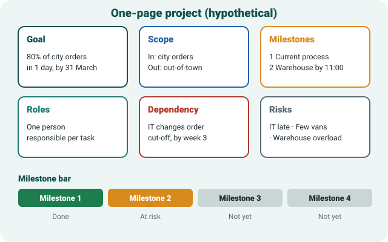

K5 · Planning and keeping work commitments › Level 4 Proficient
Run a lean project on one page
This lesson completes Sheet 6: One-page project. Print template. It builds on Prioritise competing tasks (Level 3) and Propose a small improvement (Level 3).
1. Objectives
- Write a one-page project plan: a measurable goal, scope, 3–5 milestones, roles, 3 main risks.
- Run a 15-minute weekly update and flag work that depends on other teams.
2. Retrieval warm-up
- What are the four rungs of handover when mentoring?
- Behaviour-based feedback has which three parts?
Answers
- Demonstrate; do together; observe; do alone.
- What you saw; its effect; a suggestion for next time.
Review: Mentor a colleague.
3. Explanation
Seniors are often given small projects: 3–6 people, a few weeks to a few months. You do not need complex software. One well-made page is enough.
A one-page project has 6 boxes:
- Goal: one sentence, with a measure and a date. Example: "cut city delivery time from 2 days to 1 day, by 31 March".
- Scope: write what is in and what is out. The "out" box stops the project from growing.
- Milestones: 3–5 milestones. Each one is a visible result, not an activity.
- Roles: each task has exactly one person responsible. Also note who approves, who is consulted and who is informed.
- Dependencies: which work needs another team to act first? Who there, by when?
- Risks: the 3 biggest risks, each with an early warning sign and a response.

Test small before going big. An improvement project should include a test milestone. Try it on one shift, one shop or one route first. Measure the result. Then expand.
The 15-minute weekly update. Each person answers three questions: what is done, what is next week, what is blocking me. Blockers are noted and handled after the meeting, only with the people involved.
Weekly update, 15 minutes
- Look at the milestone barGreen: on time. Orange: at risk. Red: late.
- Three questions eachDone, next week, blockers.
- DependenciesHave other teams done their part?
- Update the pageSend it out the same day.
When a milestone is at risk of slipping, say so early. Give the person with authority three choices: move the date, cut scope, or add resources.
4. Workplace example
Hypothetical scenario. Ryan is a senior operations specialist at an online retailer. He is asked to run a next-day city delivery project, with a team of 5, over 10 weeks.
He writes the goal: 80% of city orders delivered within 1 day, by 31 March. The "out" box: no change of courier, no out-of-town orders.
Four milestones. Milestone 1: a map of the current process. Milestone 2: the warehouse processes orders before 11:00. Milestone 3: a 3-week test in 2 districts. Milestone 4: roll-out to the whole city.
Dependency: the IT team must change the order cut-off time in the system. Ryan meets the IT head in week one and agrees a week-3 deadline.
In week 4, the update shows milestone 2 is late. IT has done only half. Ryan gives the director three choices. The director cuts scope: test in 1 district first.
At the end of week 10, 76% of orders in the test district arrive within 1 day. Ryan reports exactly that figure, with a plan to reach 80%.
Why this works: the "out" box keeps the project lean. The dependency is agreed early. When it slips, he says so early and offers choices. The result is reported honestly.
5. Practice
Hypothetical scenario. You are a charge nurse on a hospital medical ward. You are given an 8-week project: cut the waiting time for discharge. The current average is 3 hours. Printing discharge papers depends on the records office. Payment depends on the finance office.
Write a measurable goal, one "out" line, 3 milestones, 2 dependencies and 1 risk with an early warning sign.
Hint 1
A milestone is a visible result. "Meet the finance office" is an activity. "Finance agrees the payment process before 10:00" is a result.
Hint 2
The "out" box could be new software, or other wards.
Model answer
- Goal: average discharge waiting time under 1.5 hours on the medical ward, in week 8.
- Out: no change to the hospital software, no other wards in this phase.
- Milestones: (1) time each step of 30 discharges, week 2; (2) agree the new process with both offices, week 4; (3) test for 3 weeks and measure again, week 8.
- Dependencies: the records office prints discharge papers before 10:00; the finance office opens an extra counter at peak times.
- Risk: doctors sign discharge orders late. Early sign: no discharge list by 9:00. Response: agree with the ward head that orders are signed before 8:30.
(The figures are hypothetical.)
6. Self-check
Choose an answer. Every option has an explanation.
Question 1. Which line is a good milestone?
-
Not quite. This is an activity. A meeting can end with no result at all.
-
Correct. Correct. A milestone is a visible result with a date, so you know whether it is reached.
-
Not quite. This cannot be measured and has no concrete result.
Question 2. Why does a one-page project need an "out of scope" box?
-
Correct. Correct. Writing what is out helps the team and the sponsor share the same scope.
-
Not quite. Scope can still change, but someone with authority must decide and adjust the dates.
-
Not quite. People usually understand scope differently. Writing it down creates agreement.
Question 3. Three people are all "responsible" for one task. What is the risk?
-
Not quite. When many people share responsibility, each one often waits for the others.
-
Correct. Correct. Each task should have exactly one responsible person, with others consulted or helping.
-
Not quite. Responsibility shared by everyone often belongs to no one.
Question 4. In week 5, you see that milestone 3 will be 2 weeks late. What should you do?
-
Not quite. Reporting late takes away the decision-maker's chance to adjust.
-
Correct. Correct. Early warning with choices lets the decision-maker act in time.
-
Not quite. This may overload people, and the sponsor does not see the real risk.
7. Reflection
- What made your last project grow? Would an "out" box have helped?
- Which dependency delays you most often? How could you agree it earlier?
8. Real-world application
In the next 7 days, choose a project or large task you are working on. Complete Sheet 6. Send it to the person who gave you the work and ask: "Do the scope and milestones look right to you?"
9. Metadata
| skill | K5 · Planning and keeping work commitments |
|---|---|
| level | Level 4 · Proficient |
| group | N4 |
| framework_map | CSfW: 3a Plan and organise; SkillsFuture CCS: Self Management; Creative Thinking; NACE: Professionalism; WEF: Creative thinking; EntreComp: Planning and management (reference only) |
| original | Vietnamese version |
| updated | 2026-11-14 |
Finish the lesson
Mark it as done and the site suggests reviews after 1, 3 and 7 days. The data stays on your device only.
Suggested reviews: